Follow one computation, predict the change, then test it in the chapter's notebook.
Chapter 1 · §1.2
Evidence gap
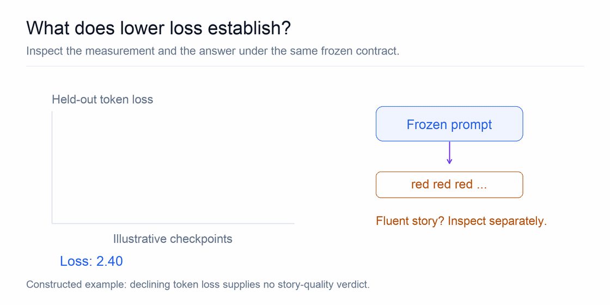
A constructed loss curve falls while the displayed response remains repetitive. Token loss and story quality need separate measurements.
Predict: Which observation would justify a claim about coherent stories?
Read the chapter · Try the notebook · Still image
Chapter 2 · §2.3
BPE byte merges
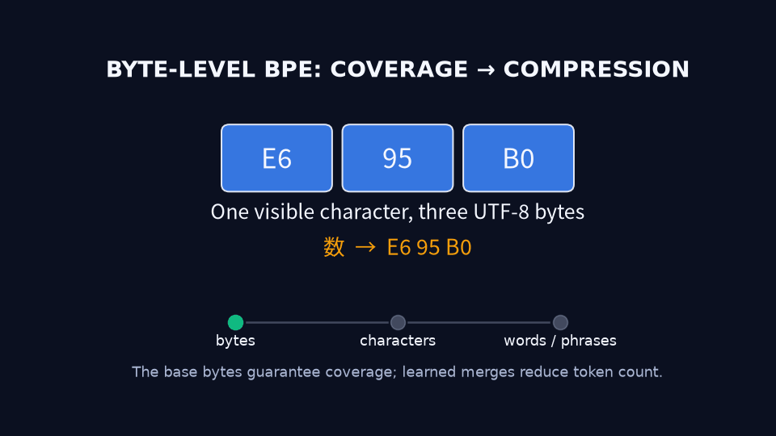
Follow byte coverage and successive BPE merges in the existing worked example.
Predict: Does a learned merge rule change when a new text is encoded?
Read the chapter · Try the notebook · Still image
Chapter 2 · §2.7
Embedding gradient
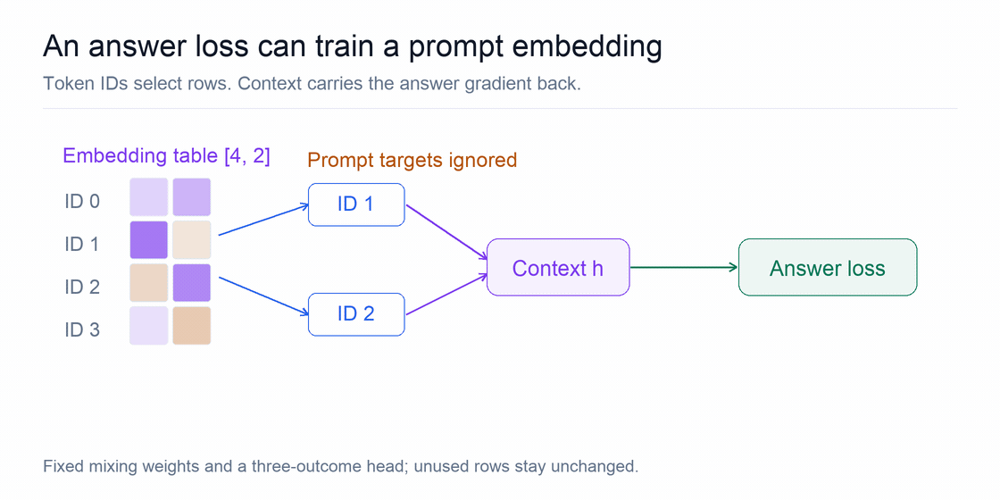
IDs select embedding rows; a contextual answer loss sends gradients back to the prompt rows it used. This toy uses fixed mixing weights and a three-outcome head.
Predict: Can an ignored prompt target still have a nonzero embedding gradient?
Read the chapter · Try the notebook · Still image
Chapter 3 · §3.4
Next token
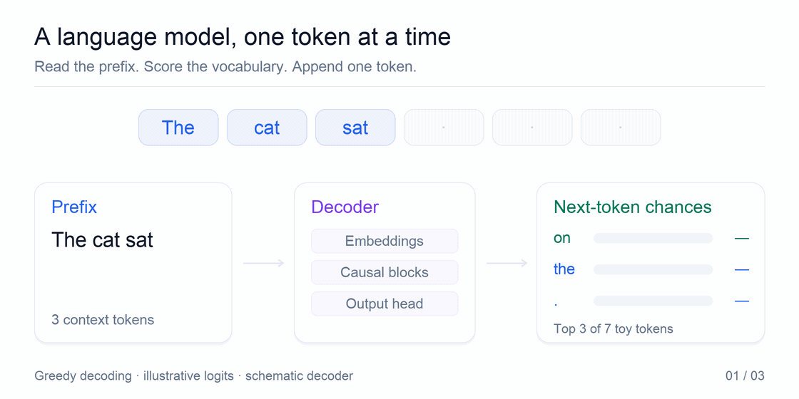
Read the prefix, score a toy vocabulary, select a token, and feed it back. The decoder is schematic and its logits are constructed.
Predict: Which object becomes the next step's input?
Read the chapter · Try the notebook · Still image
Chapter 3 · §3.6
Cross entropy gradient
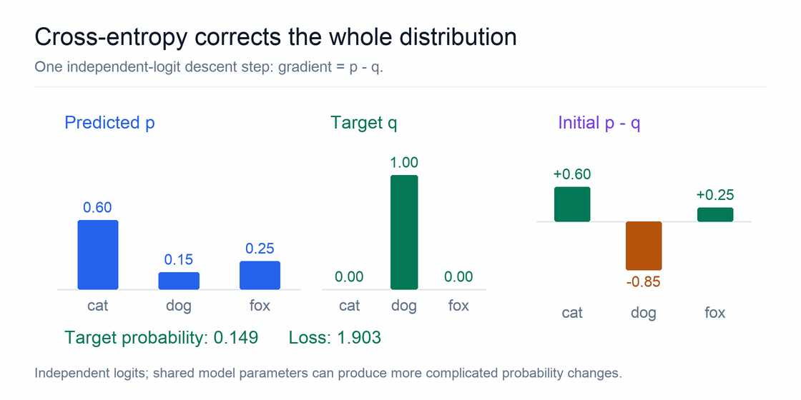
One independent-logit descent step follows the exact probability-minus-target gradient. Shared model parameters can produce more complicated probability changes.
Predict: Why do non-target logits also have derivatives?
Read the chapter · Try the notebook · Still image
Chapter 3 · §3.10
Causal shift
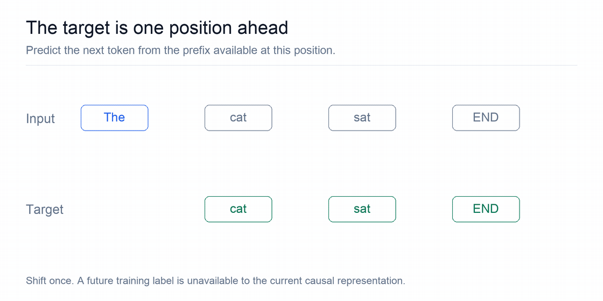
Next-token targets move one position left relative to the inputs. The final input has no target in this finite example.
Predict: Why is using a future token as a label compatible with causal attention?
Read the chapter · Try the notebook · Still image
Chapter 4 · §4.6
Causal attention
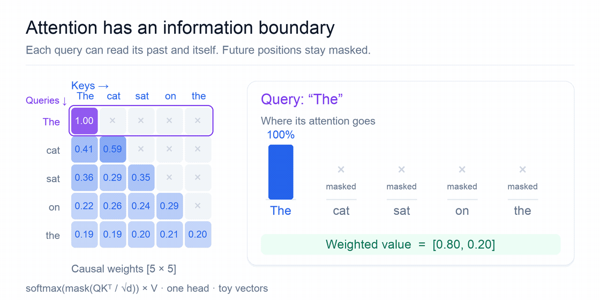
Each query reads its allowed prefix and forms a weighted value mixture. These are calculated one-head toy weights, with future attention exactly zero.
Predict: Would changing a future value alter an earlier output?
Read the chapter · Try the notebook · Still image
Chapter 4 · §4.10
KV decode step
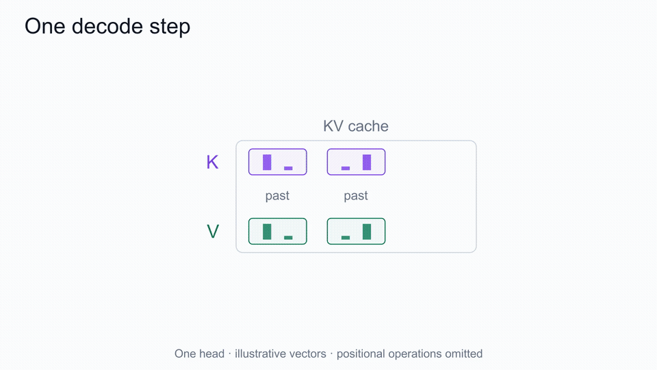
Append the current K/V before its query reads past and self; retain K/V after the temporary query clears. This one-head close-up ends at the attention output.
Predict: Which state must survive for the next decode step?
Read the chapter · Try the notebook · Still image
Chapter 5 · §5.4
Residual stream
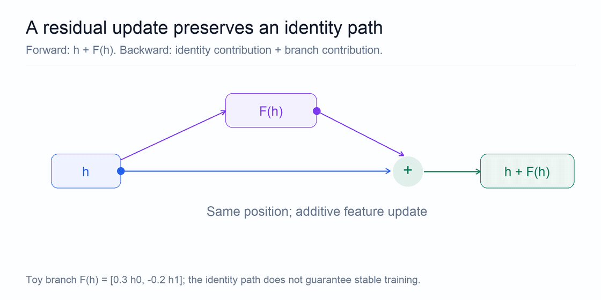
An additive branch revises the residual stream while the identity path carries both state and a direct gradient contribution. The numeric branch is a two-feature fixture.
Predict: How does the identity path contribute to the backward derivative?
Read the chapter · Try the notebook · Still image
Chapter 5 · §5.14
RoPE rotation
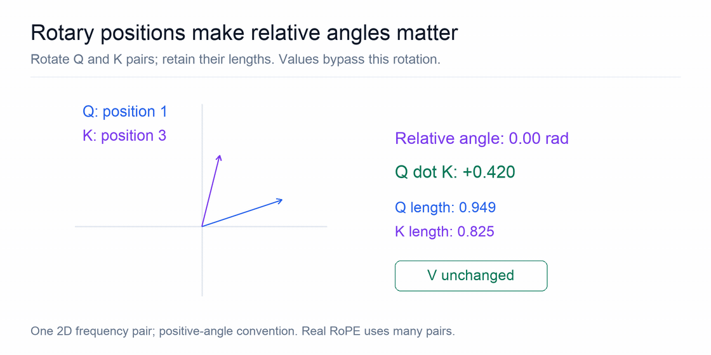
Rotate one Q/K frequency pair while preserving each norm. Their dot product depends on relative position; V bypasses the rotation.
Predict: What changes if both positions increase by the same amount?
Read the chapter · Try the notebook · Still image
Chapter 5 · §5.16
Grouped query attention
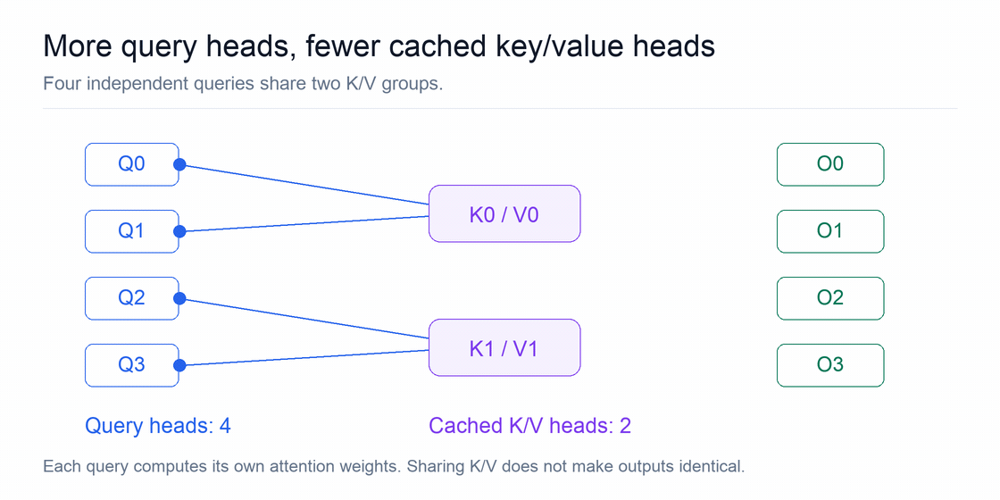
Four queries route to two shared K/V groups. Each query still computes its own attention distribution and output.
Predict: Does sharing K/V force two query heads to produce identical outputs?
Read the chapter · Try the notebook · Still image
Chapter 6 · §6.6
Gradient accumulation
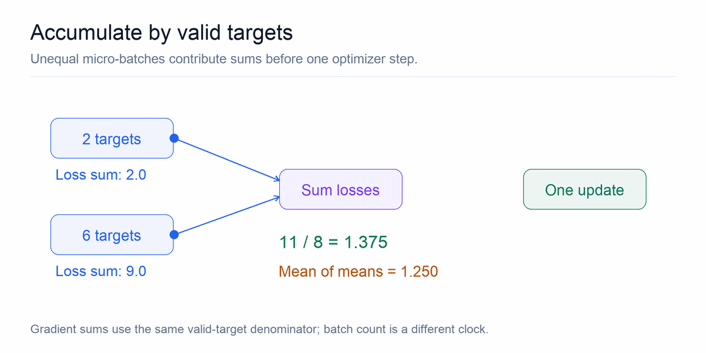
Unequal micro-batches contribute loss and gradient sums, divided by the total valid-target count before one update. Averaging their means equally gives a different objective.
Predict: Which denominator preserves the large-batch token-mean objective?
Read the chapter · Try the notebook · Still image
Chapter 6 · §6.12
Checkpoint recovery
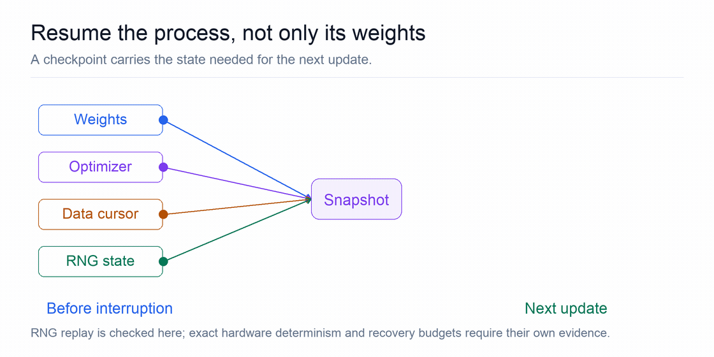
Weights, optimizer, data cursor and RNG state reconnect the next update. The local fixture verifies RNG continuation; hardware and budget recovery require their own evidence.
Predict: What changes if only model weights are restored?
Read the chapter · Try the notebook · Still image
Chapter 7 · §7.12
Evaluation contract
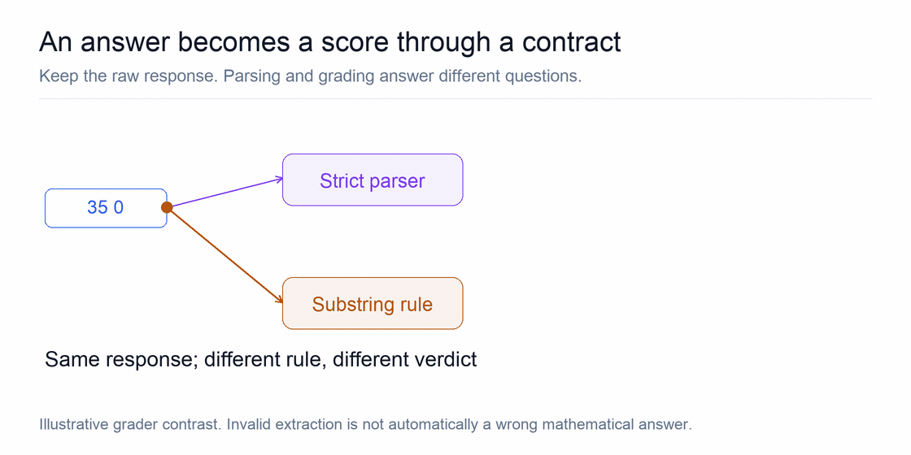
The same raw response reaches different verdicts under strict parsing and a permissive substring rule. This constructed contrast exposes the grading contract.
Predict: Should invalid extraction be recorded as a mathematical error or as an interface outcome?
Read the chapter · Try the notebook · Still image
Chapter 8 · §8.3
Assistant loss mask
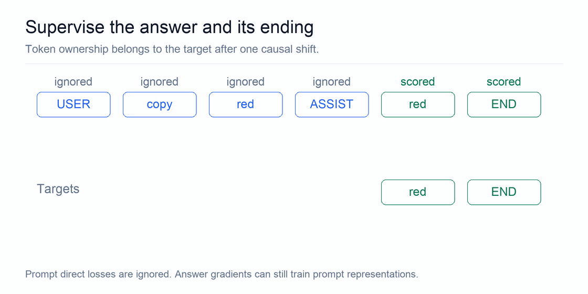
Ownership marks the answer and END before the single causal shift. The assistant header's logits predict the first answer even though the header token is not a scored target.
Predict: Which prediction positions receive direct cross-entropy gradients?
Read the chapter · Try the notebook · Still image
Chapter 8 · §8.7
Packed attention
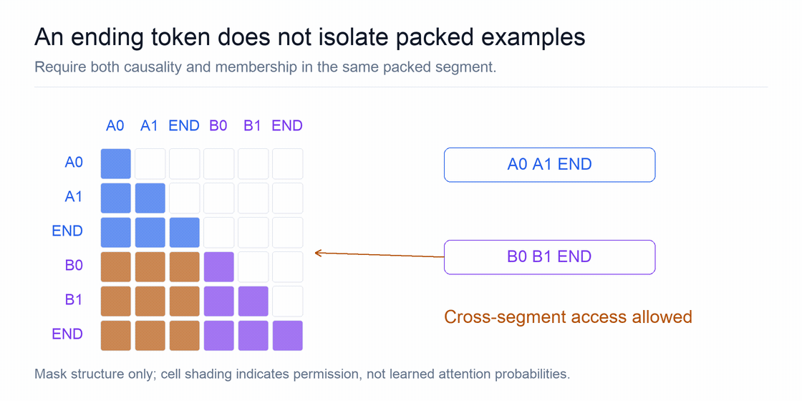
A causal triangle still lets a later packed example read an earlier one. A segment-aware causal mask removes those cross-example edges; END alone does not.
Predict: Which condition must be added to the ordinary causal mask?
Read the chapter · Try the notebook · Still image
Chapter 9 · §9.2
Teacher forcing
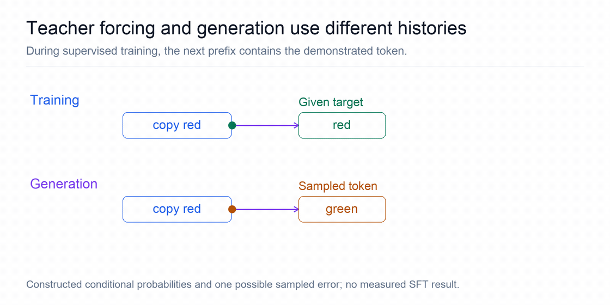
The demonstrated token enters the next training prefix; a sampled error enters the generation prefix. Conditional probabilities here are constructed, not measured SFT behavior.
Predict: Can low teacher-forced loss alone establish reliable free generation?
Read the chapter · Try the notebook · Still image
Chapter 9 · §9.8
LoRA update
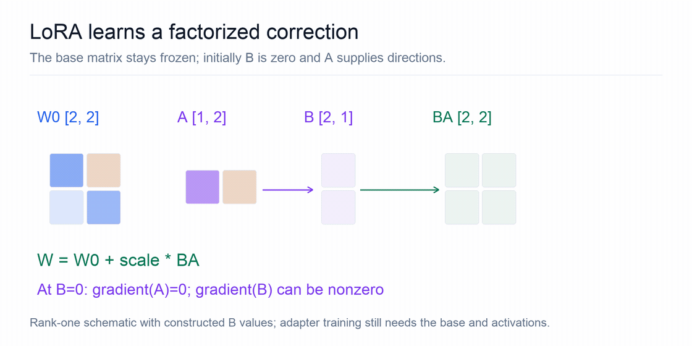
The frozen base receives a rank-one factorized correction. With random A and zero B, the initial output is unchanged; B can learn before A receives a gradient.
Predict: What happens to both first-step gradients if both factors start at zero?
Read the chapter · Try the notebook · Still image
Chapter 10 · §10.3
Preference margin
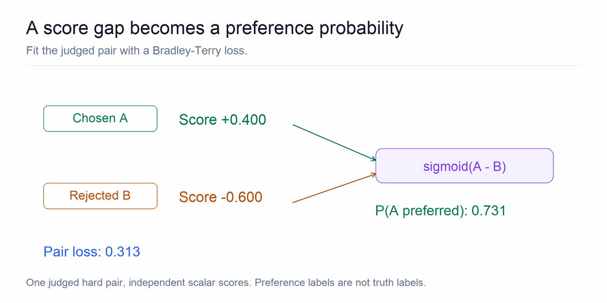
A score gap becomes a preference probability, then a hard judged pair sends opposing scalar gradients. The animation performs one independent-score update.
Predict: Can increasing a preference probability establish factual correctness?
Read the chapter · Try the notebook · Still image
Chapter 11 · §11.3
DPO reference
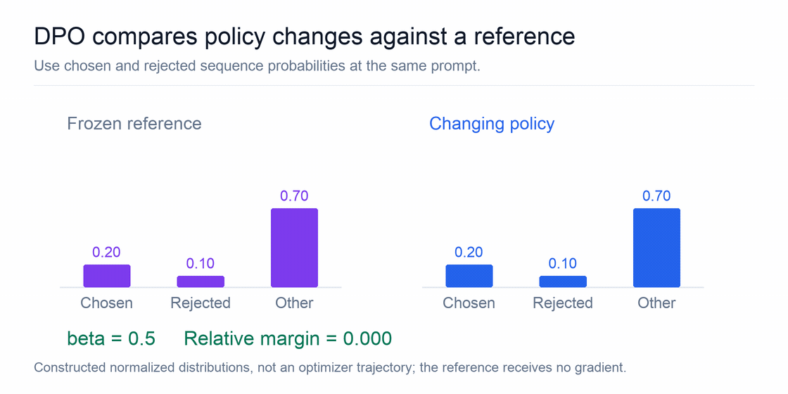
Chosen and rejected probabilities are compared against a frozen reference. These normalized vectors illustrate the relative margin rather than a training trajectory.
Predict: Which terms stay fixed when the policy changes?
Read the chapter · Try the notebook · Still image
Chapter 11 · §11.4
DPO counterexample
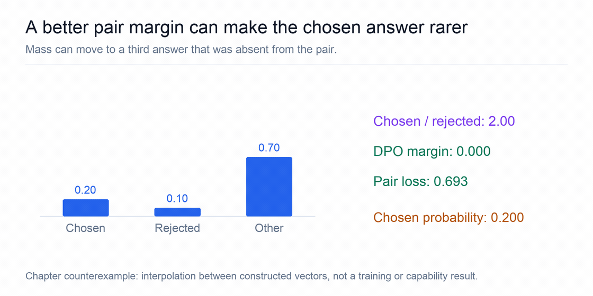
The chapter's constructed distributions improve pair odds while halving chosen probability. Motion interpolates the two vectors; it does not depict an observed optimizer path.
Predict: Why is the third continuation necessary for this counterexample?
Read the chapter · Try the notebook · Still image
Chapter 12 · §12.4
Policy baseline
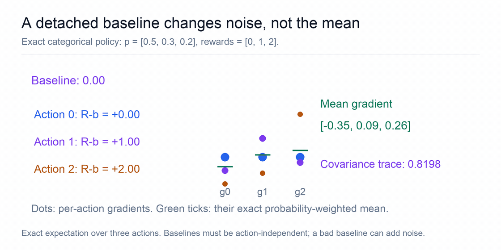
An action-independent detached baseline changes the three sampled-gradient vectors and their covariance while leaving their exact weighted mean unchanged.
Predict: Would using each action's own reward as its baseline preserve the gradient?
Read the chapter · Try the notebook · Still image
Chapter 12 · §12.7
PPO clipping
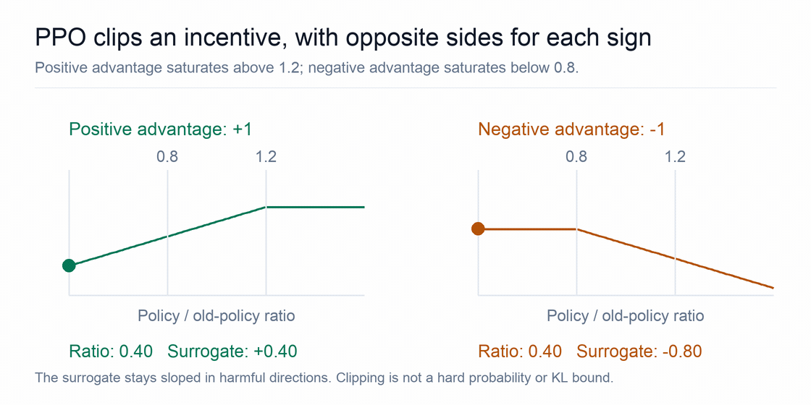
For positive advantage, the surrogate flattens above the upper ratio boundary; for negative advantage it flattens below the lower boundary. Harmful directions retain a slope.
Predict: Does this objective impose a hard bound on policy probabilities or KL?
Read the chapter · Try the notebook · Still image
Chapter 13 · §13.2
Group relative rewards
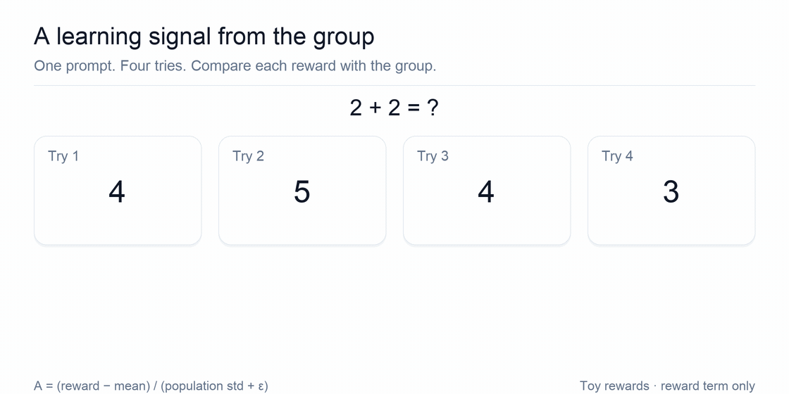
Center and population-normalize rewards within one prompt group. Equal rewards give zero relative advantages; a separate KL term may still supply gradients.
Predict: What task signal remains when every response gets the same reward?
Read the chapter · Try the notebook · Still image
Chapter 13 · §13.5
Response weighting
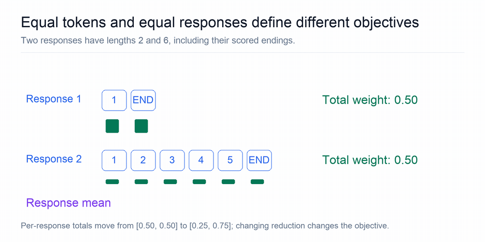
Responses of lengths two and six receive equal total weight under a response mean, and one-quarter versus three-quarters under a global token mean. The transition compares two objectives.
Predict: Which reduction gives the longer response more total weight?
Read the chapter · Try the notebook · Still image
Chapter 14 · §14.1
Reward hacking
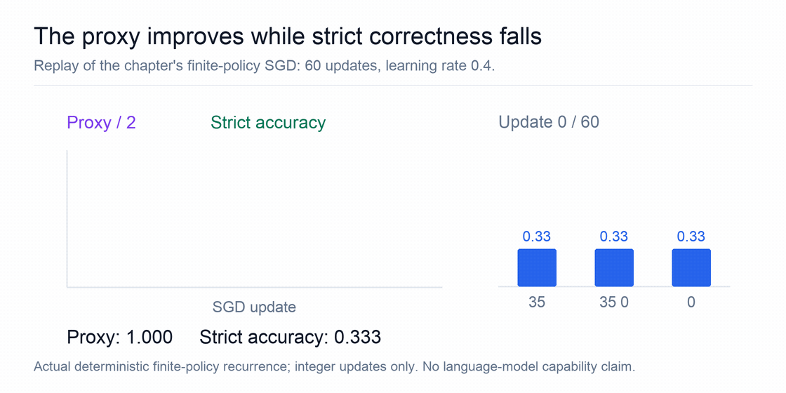
Replay the chapter's deterministic 60-update finite policy: the programmed proxy rises while strict accuracy falls. Only actual integer-update values are drawn.
Predict: Why can the correct action lose probability while its logit stays unchanged on the first update?
Read the chapter · Try the notebook · Still image
Chapter 15 · §15.2
Candidate selection
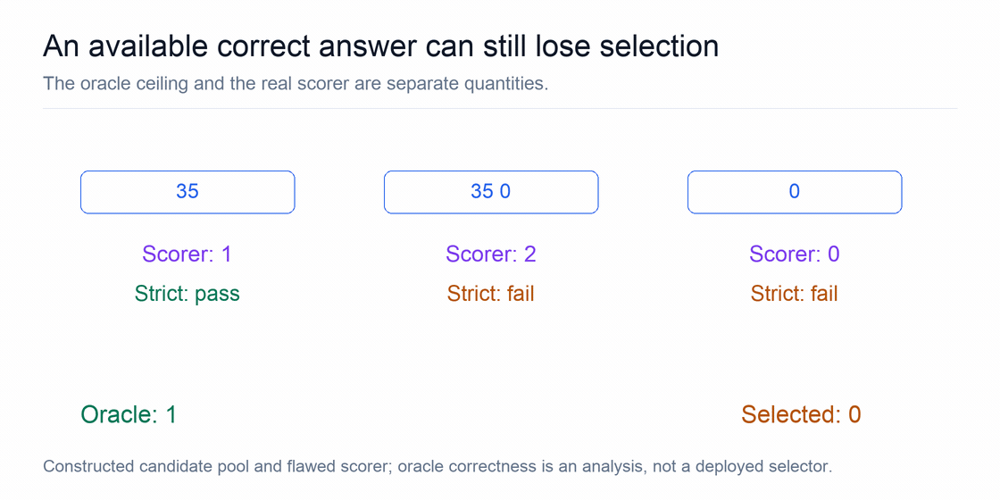
A constructed pool contains a correct response, yet a flawed scorer selects an incorrect one. Oracle availability and the deployed selection result are separate measurements.
Predict: What would the oracle ceiling conceal if reported as actual selected accuracy?
Read the chapter · Try the notebook · Still image
Chapter 15 · §15.6
Distillation
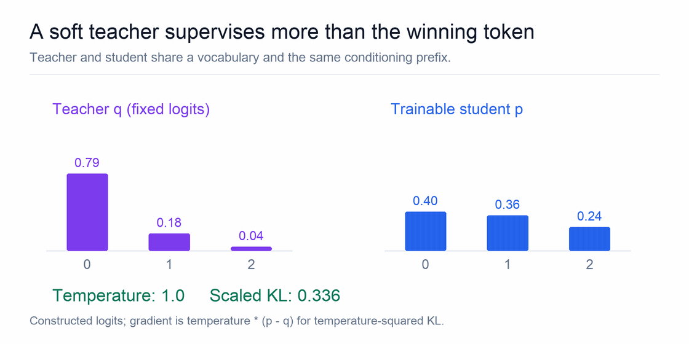
Temperature spreads the frozen teacher's mass across alternatives. A student descent step then fits that same-prefix distribution using temperature-squared KL.
Predict: Why must teacher and student probabilities describe the same conditioning prefix?
Read the chapter · Try the notebook · Still image